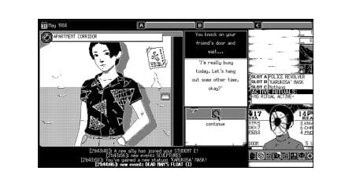

'World of Horror' is what happens when you mix Junji Ito with HP Lovecraft.

The scariest thing about World of Horror might be the fact that it's being lovingly crafted
by a part-time dentist. Pawel Kozminski is the sole creator of World of Horror, and he
also practices dentistry in Poland, splitting his time between poking at people's molars
and placing pixels in the perfect spots using MS Paint. Yes, that Paint.
World of Horror is borne of strange circumstances, which might explain why the game
itself is so unsettling. It plays out in five short stories set in a seaside village in 1980s
Japan, whose residents are falling into mass madness while eldritch monsters rise from
the seas. Eerie chiptune music plays throughout the game, frantic and propelling.
People have gone missing, festering demons are walking the streets, and sushi chefs
are serving omakase with human eyeballs on the platter. Fight scenes are turn-based,
forcing you to stare down your fears and face slaughter one move at a time.
Kebudayaan Indonesia yang multikultur seperti itu, ketika dikaji dari sisi dimensi waktu, dapat dibagi pula pengertiannya :
| FORM INPUT SISWA | ||
| Nama | : | |
| Tempat Lahir | : | |
| Jenis Kelamin | : |
Laki-Laki Perempuan |
| Kelas | : | |
| Hobi | : |
Olahraga
Musik Logik Bahasa |
| Alamat | : | |
| DATA | JANUARI | TOTAL | FEBRUARI | TOTAL | KELUAR | TOTAL | |
|---|---|---|---|---|---|---|---|
| MASUK | MASUK | JANUARI | FEBRUARI | ||||
| TOTAL | |||||||